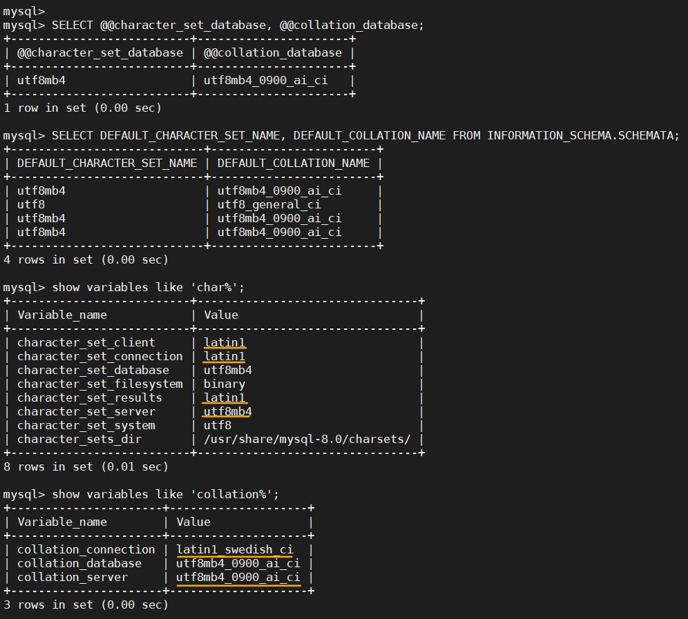

MySQL
記錄我在 VCS 上操作 container:MySQL 的過程，以及一些問題要如何克服。
部分是從 DockerHub > Database > MySQL 複製過來。
- 如果連動的資料夾沒有建立，docker會自動建立幫忙建立該路徑的資料夾。但還是建議先建立好。
- 密碼無法登入的問題請看 Database/MySQL，有說明解決方法。
- 如果不想要有密碼問題就 pull 5.7.31版的 MySQL。
--
Content:
reference:
啟動 container
記得先把連動的實體資料夾開好，並把該資料夾的使用者以及群組設定好，再執行下面指令。
docker run \
--name some-mysql \
--env MYSQL_ROOT_PASSWORD=<your_password> \
-v /datamount/mysql/data:/var/lib/mysql \
-v /datamount/mysql/conf:/etc/mysql/conf.d \
-p 3306:3306 \
--detach mysql:latest
//一行指令
docker run --name some-mysql --env MYSQL_ROOT_PASSWORD=<your_password> -v /datamount/mysql/data:/var/lib/mysql -v /datamount/mysql/conf:/etc/mysql/conf.d -p 3306:3306 --detach mysql:latest密碼無法登入的問題
這主要是因為 Mysql 版本的問題。密碼加密的方式不同。
reference:
- MySQL 8.0 的新密碼加密 plugin 導致 PHP 連線失敗 - Zeroplex 生活隨筆
- 連線 MySQL 8.0 時，加密方式不相容的解決方法 | IT人
- Andreas Geisler - Berlin based Full Stack Software Developer
- Upgrading to MySQL 8.0 : Default Authentication Plugin Considerations | MySQL Server Blog
- MySQL密碼不能登錄的解決辦法 - 每日頭條
my.cnf
到連動資料夾 /datamount/mysql/conf 底下，建立 my.cnf，
在 my.cnf 加上下列資訊，然後重啟 container。
[mysqld]
default-authentication-plugin = mysql_native_passworddocker restart some-mysql這樣就可以在 VM 上面，用輸入密碼的方式進入 mysql。 但如果想要在外面用密碼方式登入還需要進入 mysql 做設定。
docker exec -it some-mysql bash
mysql -u root -p// 看一下 password 的加密方式。
use mysql;
SELECT user, authentication_string, host from user;
// 設定可以用 mysql_native_password 加密方式登入。
// ALTER USER 'root'@'localhost' IDENTIFIED WITH mysql_native_password BY '<your_password>';
ALTER USER 'root'@'%' IDENTIFIED WITH mysql_native_password BY '<your_password>';
FLUSH PRIVILEGES;docker-compose
或是修改 docker-compose.yml 的 mysql 服務部分，新增一行。(這方法我還沒嘗試過，但應該可行。)
```{docker compose .yml} command: --default-authentication-plugin=mysql_native_password
> 以下是舊的做法，依舊可用，指示步驟比較多一點。 <br>
> <br>
> **Step01:** <br>
> <br>
> 去 /DBdata/mysql/conf 新增 my.cnf。 <br>
> 新增與修改檔案要用 sudo su 權限。 <br>
> <br>
> <br>
> ```{my.cnf} <br>
> [mysqld] <br>
> skip-grant-tables <br>
> ``` <br>
> <br>
> ```{bash} <br>
> docker restart some-mysql <br>
> ``` <br>
> <br>
> **Step02:** <br>
> <br>
> 登入 container <br>
> 登入 mysql，密碼 DAS@mysql2020 <br>
> <br>
> ```{bash} <br>
> docker exec -it some-mysql bash <br>
> mysql -u root -p <br>
> ``` <br>
> <br>
> **Step03:** <br>
> <br>
> 指定使用資料庫，更新密碼為空。 <br>
> <br>
> ```{bash} <br>
> use mysql; <br>
> SELECT user, authentication_string, host from user; <br>
> update user set authentication_string='' where user='root'; <br>
> flush privileges; <br>
> ``` <br>
> <br>
> **Step04:** <br>
> <br>
> 退出mysql，把第一步的skip-grant-tables註釋。再重啟mysql <br>
> <br>
> ```{bash} <br>
> vim my.cnf <br>
> docker restart some-mysql <br>
> docker exec -it some-mysql bash <br>
> mysql -u root -p <br>
> ``` <br>
> <br>
> **Step05:** <br>
> <br>
> 使用原始加密的密碼 + 權限設定 <br>
> <br>
> mysql_native_password <br>
> <br>
> ```{bash} <br>
> use mysql; <br>
> ALTER USER 'root'@'localhost' IDENTIFIED WITH mysql_native_password BY 'DAS@mysql2020'; <br>
> ALTER USER 'root'@'%' IDENTIFIED WITH mysql_native_password BY 'DAS@mysql2020'; <br>
> GRANT ALL PRIVILEGES ON *.* TO 'root'@'localhost' WITH GRANT OPTION; <br>
> ``` <br>
---
## 看一些變數值
**reference:**
- [查詢 MySQL 對 此帳號 開放(GRANT)哪些權限 | Tsung's Blog](https://blog.longwin.com.tw/2009/06/query-mysql-show-grant-permission-2009/)
- [查詢 MySQL/MariaDB 資料庫的使用者帳號教學 - Office 指南](https://officeguide.cc/how-to-show-list-users-in-a-mysql-mariadb-database/)
- [mysql 查詢 user 帳號及權限 @ Js 片段記憶回顧中心 :: 痞客邦 ::](https://jason0324.pixnet.net/blog/post/42795331-mysql-%E6%9F%A5%E8%A9%A2-user-%E5%B8%B3%E8%99%9F%E5%8F%8A%E6%AC%8A%E9%99%90)
```{bash}
SHOW VARIABLES LIKE 'lower%';
use mysql;
select user, authentication_string, host from user;
// 查有哪些帳號
SELECT User, Host FROM mysql.user;
// 查帳號權限
// SHOW GRANTS FOR <username>;
SHOW GRANTS FOR root;建立新用戶+給予權限
但是我還不太會給予權限。
// CREATE USER 'newuser'@'%' IDENTIFIED WITH mysql_native_password BY '<your_password>';
CREATE USER 'kvgh'@'%' IDENTIFIED WITH mysql_native_password BY 'kvgh@DB2020';
// 應該是這個，但是這權限有點太大。
// GRANT ALL PRIVILEGES ON *.* TO 'newuser'@'localhost';
GRANT ALL PRIVILEGES ON *.* TO 'kvgh'@'%';設定 local file 可以上傳
reference:
這樣就可以從程式端上傳資料，也可以用 LOAD 指令上傳local檔案。
SHOW GLOBAL VARIABLES LIKE 'local_infile';
SET GLOBAL local_infile = 1;
// 等價。SET GLOBAL local_infile = 'ON';
// 等價。SET GLOBAL local_infile = true;但是這個設定，經過重啟會失效，所以必須在 my.cnf 中加入指令。
[mysqld]
SET GLOBAL local_infile = 1編碼
進入 container、mysql:
docker exec -it some-mysql bash
mysql -u root -p
> show databases;
> exit查看 mysql 的 character-set-server 和 collation-server:
docker exec -it some-mysql bash
mysql -u root -p
> SELECT @@character_set_database, @@collation_database;
> SELECT DEFAULT_CHARACTER_SET_NAME, DEFAULT_COLLATION_NAME FROM INFORMATION_SCHEMA.SCHEMATA; // 另一種作法。
> <br>
> show variables like 'char%';
> show variables like 'collation%';
> exit修改 Configuration file 與結果:
即連動資料夾下，新增 my.cnf，修改裡面內容。
修改之後要重啟 container。
- mysqld 是服務端程序 = 作為 MYSQL Server 的操作指令。
- mysql是命令行客户端程序 = 作為 MYSQL Client 的操作指令
[client]
default-character-set=utf8
[mysql]
default-character-set=utf8
[mysqld]
collation-server = utf8_unicode_ci
init-connect='SET NAMES utf8'
character-set-server = utf8 \
\



總結 mysql 的 my.cnf:
[client]
default-character-set = utf8
[mysql]
default-character-set = utf8
[mysqld]
default-authentication-plugin = mysql_native_password
collation-server = utf8_unicode_ci
init-connect = 'SET NAMES utf8'
character-set-server = utf8
local-infile = 1Mysql-Client
要在 Unbuntu 系統上安裝 mysql-client，才可以直接對不同的 DB(for mysql and mariaDB) 做連線。
install and login
-h, --host=name Connect to host.
sudo apt install mysql-client-core-5.7
// 連線
mysql -h 127.0.0.1 -P 3306
mysql -h <IP> -P 3306 -u root -pEND
- logging - How to see log files in MySQL? - Stack Overflow: 這是登入記錄或是相關操作的 error，要自己研究測試一下。